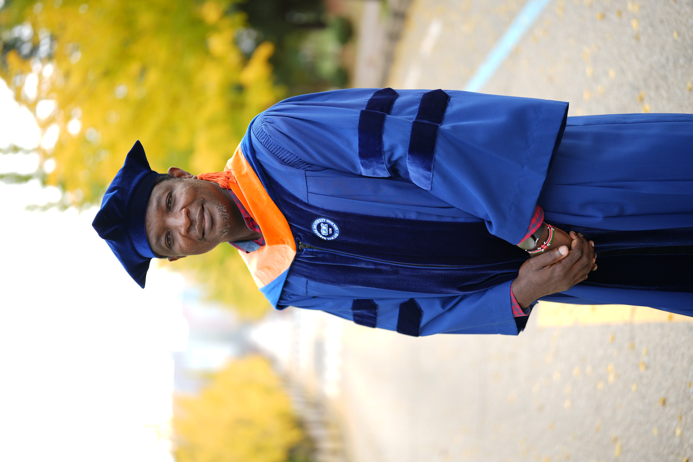
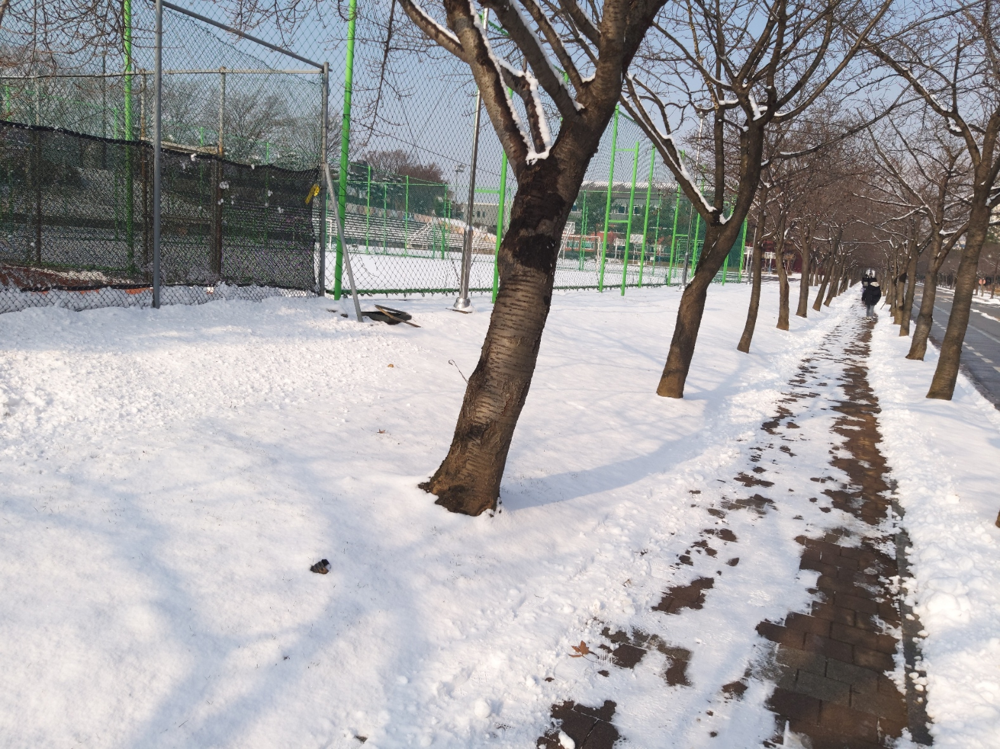
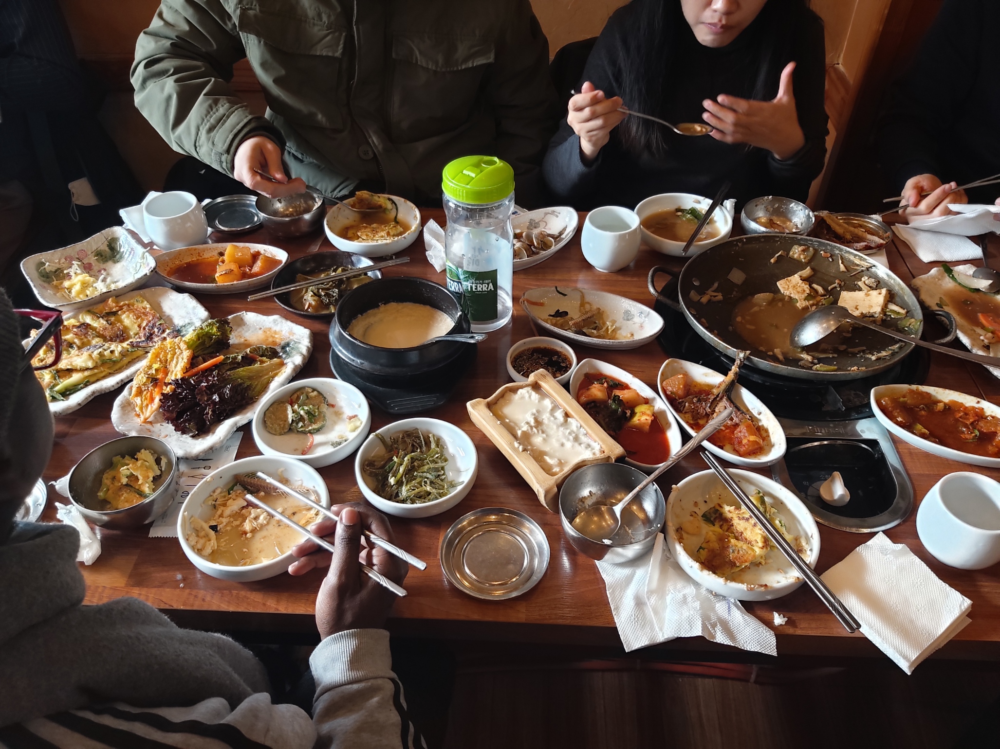

Ma Biographie
Etudes Primaires et secondaires:
Je suis né un jour de grâce du six juin 1978 à Yaoundé. Mes études primaires, je vais les effectuer tout à tour dans les villes de Loum puis à Mbanga où j’obtiens mon concours d’entrée en sixième au CES de Mbanga et mon Certificat d’Etude Primaire et Elémentaire (CEPE) en 1989. Mon secondaire, je le passe dans la ville de Mbanga où j’obtiens mon Brevet d’Etude du Premier Cycle (BEPC) en 1994 et mon Certificat de Probatoire série C en 1996. Je poursuis mon cursus secondaire dans la ville de Douala où j’obtiens mon Baccalauréat série C en 1998.
Etudes Universitaires:
Je m’inscrits ensuite en filière Chimie de la faculté des sciences de l’université de Douala. Après 4 années infructueuses à me poser des questions existentielles sur les débouchées de cette formation purement théoriques, je change complètement de voie. Je m’inscrits en 2003 en première année de BTS en Informatique de Gestion à l’Ecole Supérieure de Gestion de Douala. Là-bas, je passe mon Brevet de Technicien Supérieur en Informatique de Gestion avec la mention assez-bien en 2005. Plus tard, je suis admis sur étude de dossier en 3e année de Licence Méthode Informatique Appliquée à la Gestion des Entreprises (MIAGE) de la faculté des sciences de l’université de Douala où j’obtiens mon diplôme en 2008.
Expériences professionnelles:

Par la suite, je suis recruté en 2009 par voie de concours à la Fonction Publique de mon Pays (Cameroun) comme Programmeur. Je suis d’abord affecté à Ebolowa, puis Garoua et enfin à Buea où j’ai officié comme Technicien Informaticien dans ces représentations Régionale de la Fonction Publique. Mes missions principales ont été l’installation et la configuration des micro-ordinateurs et des imprimantes ; la maintenance préventive et curative de ces équipements. La formation et l’assistance aux personnels de la Délégation à l’utilisation des outils suscités. En marge de ces activités officielles, j’ai aussi développé des outils avec des logiciels Excel mais surtout Access pour améliorer la qualité de service rendu aux usagers. Par exemple, j’ai amélioré la gestion du courrier entrant et sortant avec un fichier Excel qui a permis de faciliter la production des statistiques à ce niveau. ’ai aussi numérisé la gestion des archives des personnels de l’Etat en service dans ces Régions grâce à une Base de Données Access. Enfin, j’ai créé une application de gestion administrative des Personnels de l’Etat en service dans les Régions. Cette application permet le comptage des agents publics classés par administration, statut et catégorie ; elle permet aussi de gérer la mobilité de ces personnels dans la Région et enfin le suivi de leur carrière. Après quelques années de service, j’ai bénéficié des promotions. J’ai ainsi été tour à tour Chef de Bureau de Personnel à la Délégation Régionale du Nord à Garoua et aussi Chef de Bureau du Fichier à la Délégation Régionale su Sud-ouest à Buea.
Formations continues:
En 2018, soucieux de la nécessité d’améliorer mes compétences, je m’inscrits à l’Ecole Normale Supérieur de l’Enseignement Technique (ENSET) de l’Université de Douala où j’obtiens successivement en 2019 une Licence Professionnelle, en 2020 un Master I Professionnel et en 2021 un Master II Professionnel en Gestion de Projet Informatique. Ces diplômes m’ont permis d’élargir ma palette d’informaticien et m’ont ouvert la voie vers l’univers de la gestion des projets. En outre toujours dans la poursuite de la quête de l’excellence, j’ai obtenu une bourse de l’agence gouvernementale coréenne de la Coopération KOICA. Je me suis envolé vers la Corée où j’ai passé près de deux ans et je suis revenu nanti d’une Master en Intelligence Artificielle option Innovation Digitale de la prestigieuse université de Hanyang campus ERICA. Depuis mon retour de la Corée en janvier 2024, Sur le plan administratif, je suis en complément d’effectif à la Délégation Régionale de la Fonction Publique du Sud-ouest en attente de déploiement et sur plan personnel je suis enseignant vacataire à l’Institut Universitaire de Technologie de l’Université de Douala au Département du Génie Informatique. Dans un futur proche, je me vois parachever ma formation par un Doctorat PHD en Informatique dans les domaines de la data science et de l’intelligence artificielle qui sont mes passions depuis mon séjour en terre coréenne.
Hobbies:
Je ne saurais clore cette présentation de ma personne sans faire une brève incursion dans mon côté jardin. Je suis marié et père de deux enfants. J’aime le sport plus précisément le football que je pratique en tant que vétéran, la marche, la natation et le volley. Je suis aussi passionné de lecture et de découvertes. Ma passion pour la lecture je l’assouvie en fréquentant assidument les bibliothèques et s’agissant des découvertes j’essaye autant que peu d’effectuer quelques voyages stratégiques de découvert au cours d’une année. Il faut dire que mon séjour en Corée du Sud a été enrichissant à plus d’un titre. J’y ai découvert une autre culture particulièrement une autre gastronomie que j’ai particulièrement appréciée.